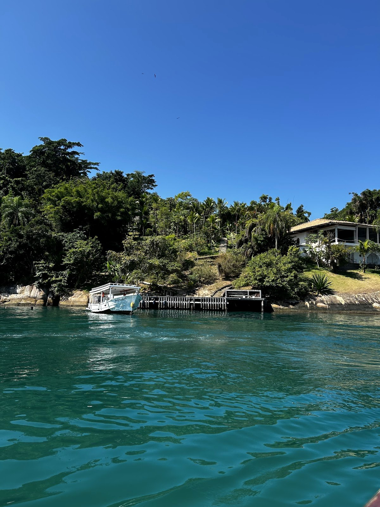
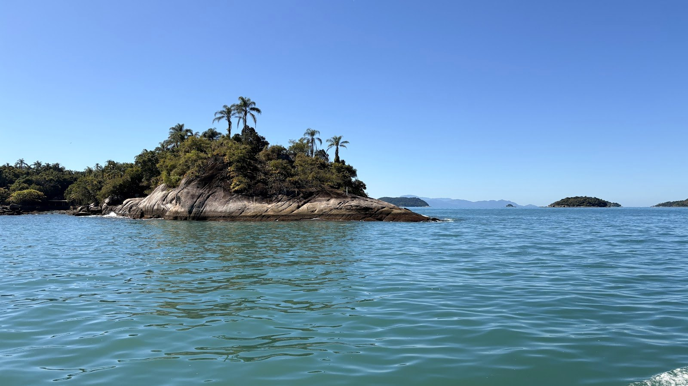
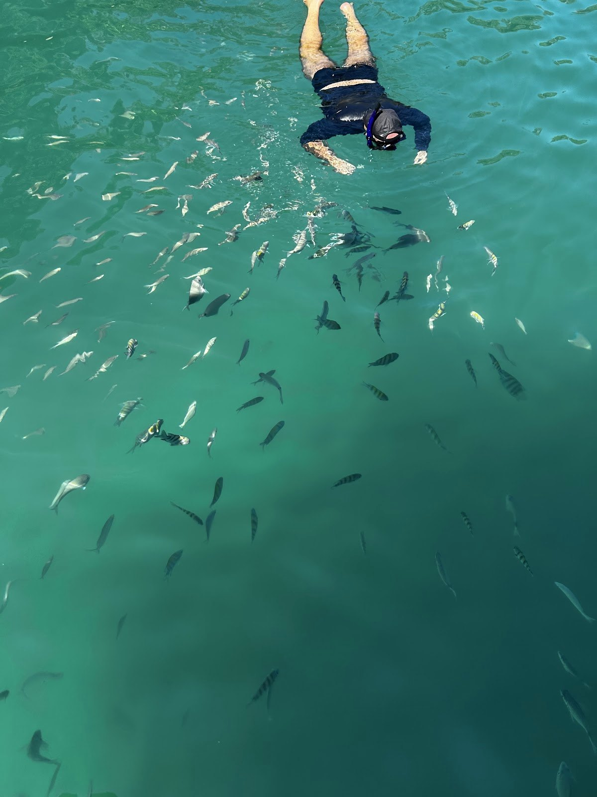
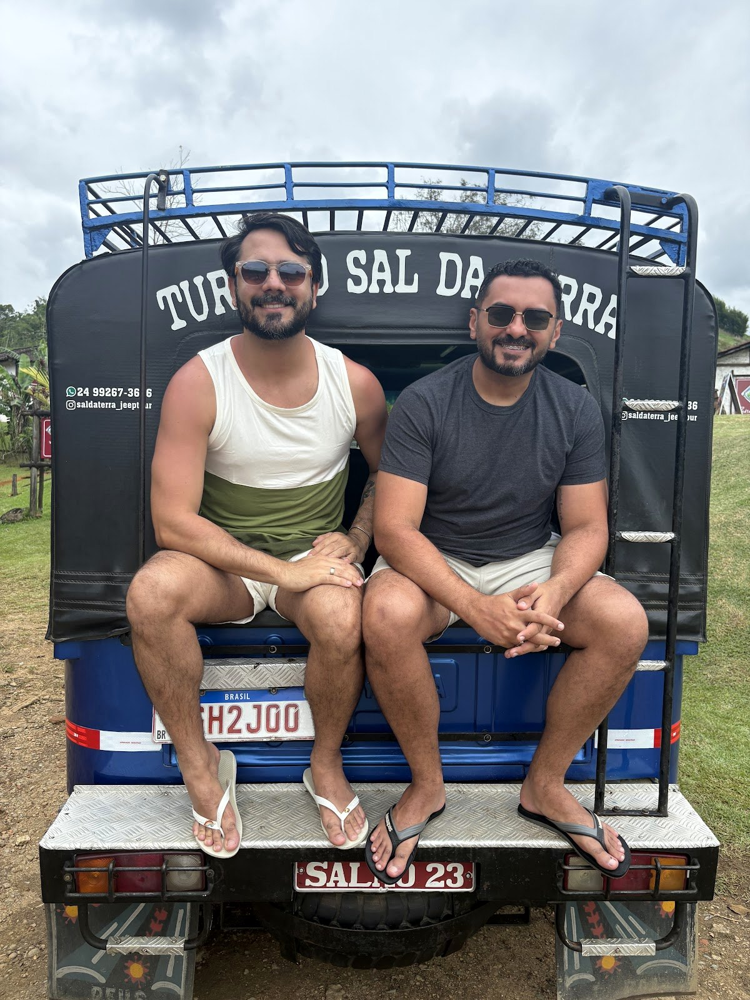
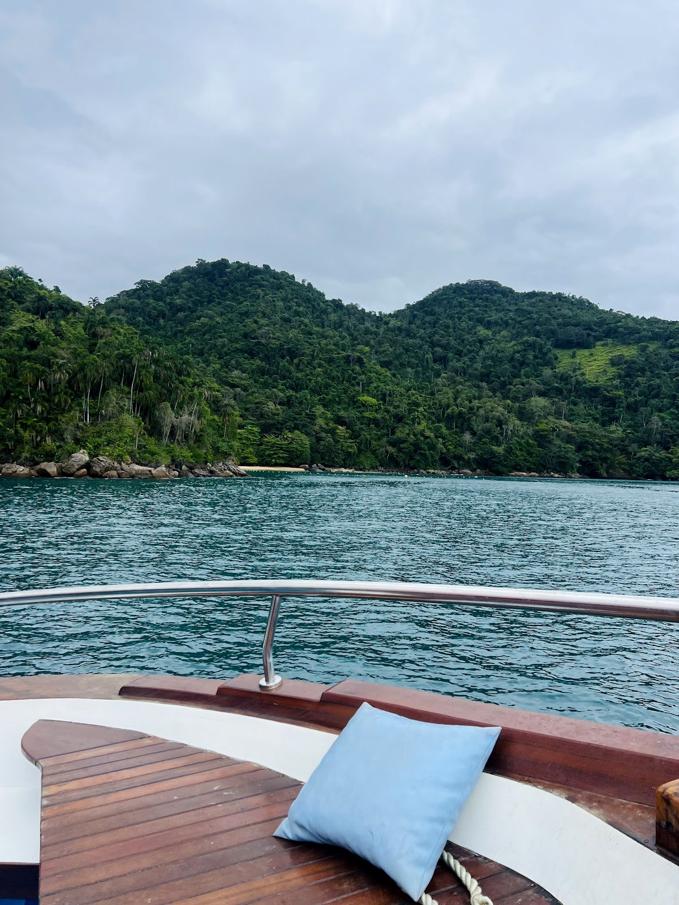
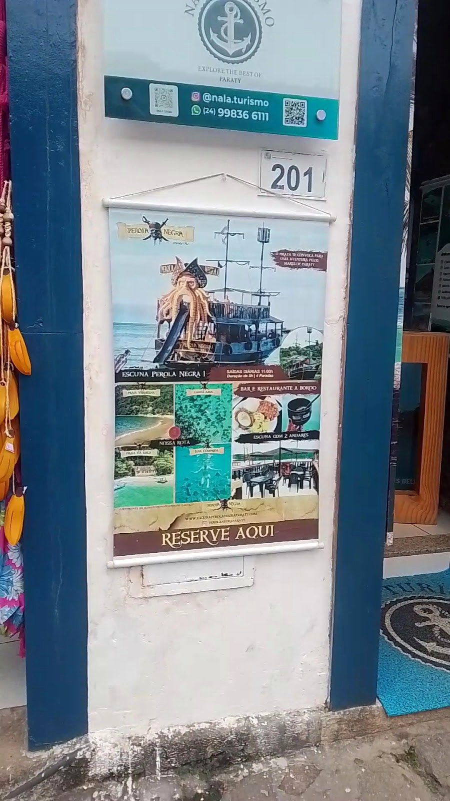
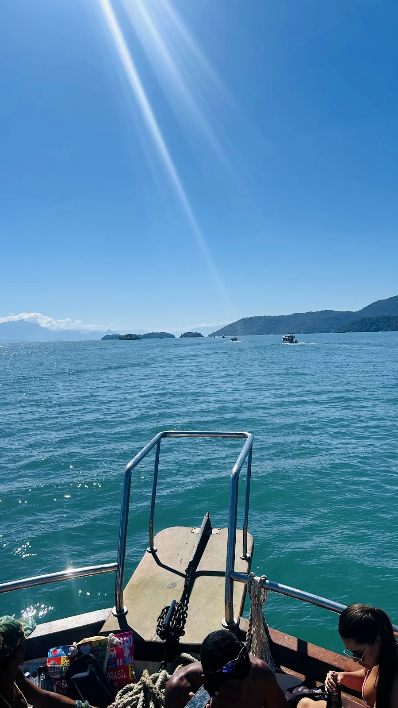

Conforto & Sabor
Bar e Restaurante a Bordo
Porções caprichadas, almoço preparado na hora e mesas sombreadas com vista panorâmica.

Ilhas de água cristalina, lancha privativa, cachoeiras na Mata Atlântica e história viva.
Da nossa sede na Rua do Comércio, nº 201 direto para as águas mais claras de Paraty. Toque nos 3 pilares da nossa bio:
Deslize os cartões para o lado →

Lagoa Azul, Praia da Lula, Ilha Comprida e Praia Vermelha. Dois andares, bar e restaurante a bordo, flutuadores e saída sem lotação.
Simular este passeio
O barco só para sua família ou turma: Ilha dos Cocos, Lagoa Azul, Praia da Conceição ou expedição ao fiorde Saco do Mamanguá.
Simular este passeio
Aventura pelos mares de Paraty com escorregador direto para o mar, música, restaurante a bordo e 4 paradas para mergulho.
Simular este passeio
Cachoeira do Tobogã, Poço do Tarzan, Pedra Branca e degustação de cachaças artesanais premiadas nos alambiques de Paraty.
Simular este passeio
Praia do Meio, Cepilho e Piscina Natural do Cachadaço combinadas com as histórias do Centro Histórico colonial.
Simular este passeio
Porções caprichadas, almoço preparado na hora e mesas sombreadas com vista panorâmica.

Caipirinhas com frutas frescas, drinks tropicais e atendimento elogiado durante toda a navegação.

Espaguetes flutuantes liberados, parada para snorkel com peixes e bote para descer direto na areia.
Do encontro na Rua do Comércio, 201 até o brinde de retorno ao Cais Histórico.
Recepção na nossa agência no Centro Histórico e embarque tranquilo no Cais de Turismo.
Mergulho entre dezenas de peixes nas águas verde-esmeralda mais famosas de Paraty.
Enseada de águas calmas e rasas cercada pela Mata Atlântica, perfeita para famílias.
Águas transparentes para flutuação, almoço servido a bordo e drinks no convés.
Navegação de volta admirando a Serra da Bocaina e o casario colonial de Paraty.

Estamos na Rua do Comércio, nº 201 (Paraty - RJ), abertos diariamente até as 22h. Também aceitamos Prime Gourmet conforme regras vigentes da temporada.
Toque nos passeios que deseja combinar e envie direto para o WhatsApp da Nala Turismo:



Nossa sede física fica na Rua do Comércio, nº 201, bem no Centro Histórico de Paraty, a poucos passos do Cais de Turismo de onde partem as escunas (saída às 11h00) e as lanchas privativas.
Sim! Trabalhamos com escunas completas de 2 andares (como a Lindo Olhar e a Pérola Negra I), equipadas com bar e restaurante a bordo, banheiros, espaguetes flutuantes, bote de apoio e todos os equipamentos de segurança homologados pela Marinha.
Atendemos clientes do Prime Gourmet! Basta selecionar a opção no simulador acima e chamar nossa equipe no WhatsApp (24) 99836-6111 para confirmar horários e regras de agendamento.